WORK
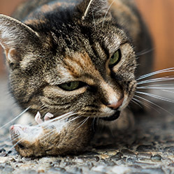
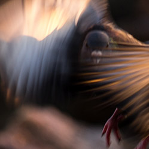
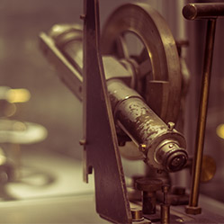
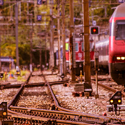
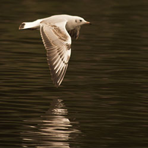
 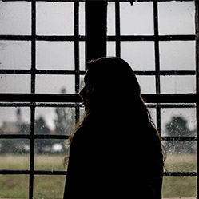
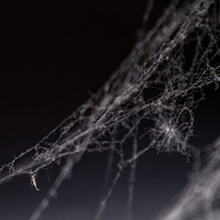
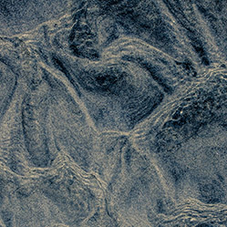
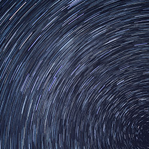
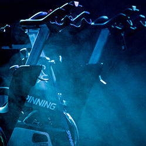
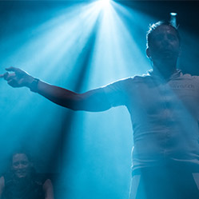
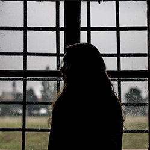
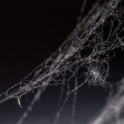
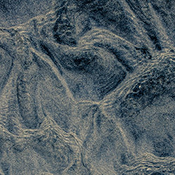
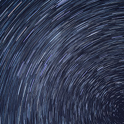
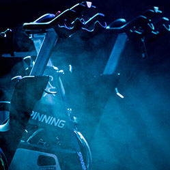
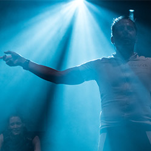
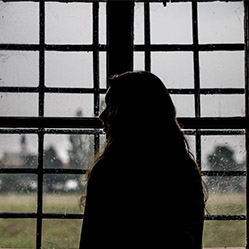
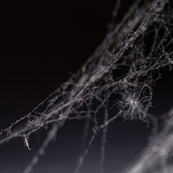
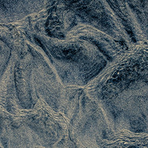
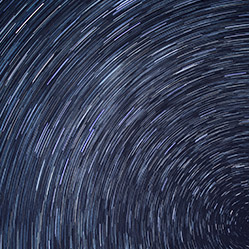
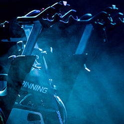
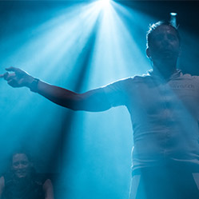
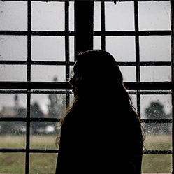
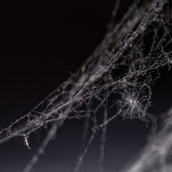
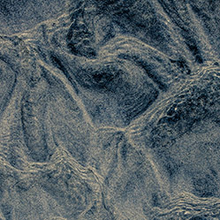
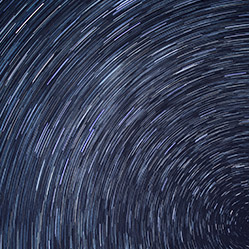
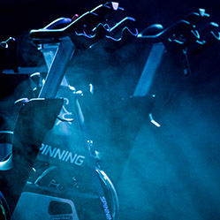
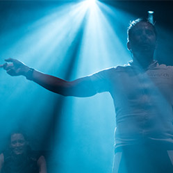

Photography has been an interesting topic for me ever since roughly 2012. After getting my first camera I started learning the craft simply by practising it myself. I mostly shoot portraits and events, as well as landscapes, animals, etc. I am currently using a Sony a7sII, a 1977 Minolta XD7, a 1939 Balda Juwella and a Canon EOS 600d with six different lenses and a flash:
Sigma 17-70mm f/2.8-4.0 DC OS HSM
Canon EF 70-300mm f/4-5.6 IS USM
Canon EF-S 18-55mm f/3.5-5.6 IS II
Minolta MD Zoom 75 - 150mm 1:4
Minolta MD 50mm 1:1.7
Minolta MC W.Rokkor 28mm 1:2.5
Canon Speedlite 430EX II
All the editing of my pictures is done in Lightroom and Photoshop.
Contact me at:
hithere
pascalsommersup
.ch